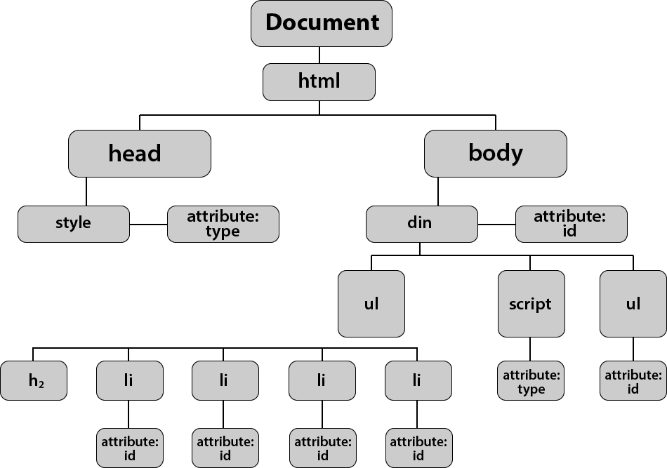

The DOM
What is the DOM?
The DOM is the Document Object Model. It is used to allow JavaScript to navigate a HTML document, and find what you want to change. Elements are commonly found using the getElementById function, where JavaScript finds an element by its ID.
How to use getElementById
You can store HTML elements into variables, and call those variables when you want to. You do not have to store the elements in variables, but it can make your code much shorter and easier to understand.
Important! Notice that document at the beginning? It is telling the code to look inside the html document. Without it, your code won't work.
Navigating the DOM
To navigate the dom, you start at the beginning, and work your way down. You separate each statement with dots, sort of like slashes and files.
Here is an image, showing the structure of an HTML document from the eyes of JavaScript.
